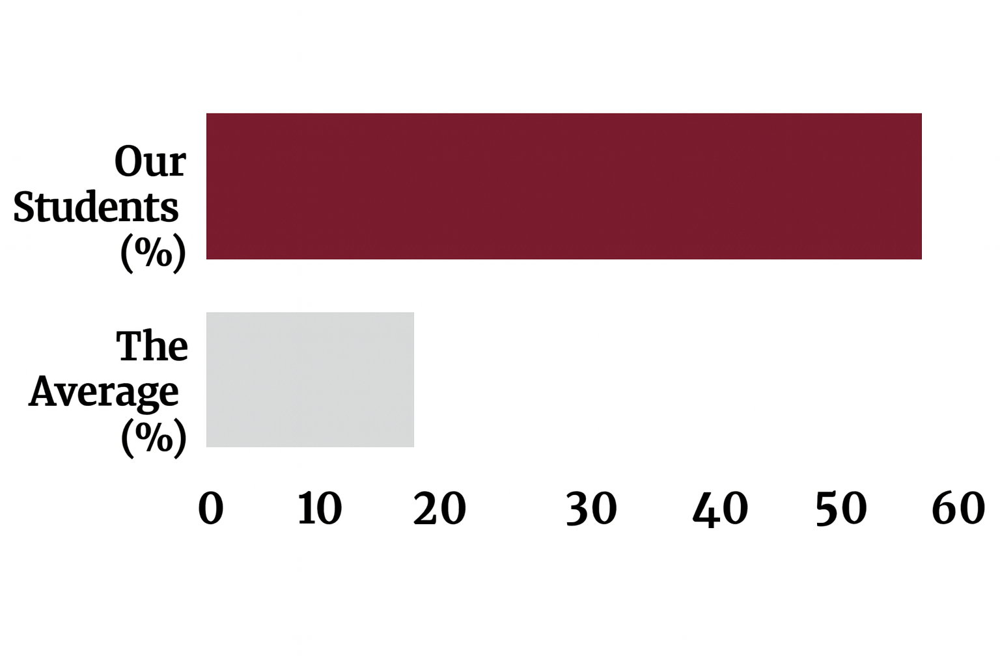

University admissions consulting
Our experienced consultants help students meet their potential and get into the best universities in the world.
From subject choices in Year 9 through to the final interview, we build the plan, the profile and the exam technique that admissions tutors respond to.
55% of our 2025 cohort placed at Ivy League, Oxbridge or Imperial Consultants drawn from the top 10% at leading universities
Oxbridge or Imperial
students
placed
covered
Why families choose us
What Differentiates Us
Most tutoring is bought by the hour and taught without a destination. We start from the offer a student wants and work backwards to the term they are in now.
Our Experience and High Standards…
- We ensure that from day 1 you know what goals you want to achieve, and we find the way to help you get there.
- Our success-tested frameworks for entrance into top universities, tailored to each student’s goals and profile.
- All of our educators are selected from the top 10% at the top universities globally.
- Our holistic service, in which we can solve a range of issues students may be facing.
Admission into Top Universities…

*Our results are based on our 2025 Graduation Cohort of students which have been with us for at least the duration of their IB / A-Levels. When we say "Top Universities", we mean: Ivy League, Oxbridge or Imperial.
How we work
Four steps, one plan
The same sequence for every student, whether they arrive in Year 9 or four months before the deadline. What changes is how much of it there is time to do.
Consultation
A free 30-minute conversation about the year group, the subjects and where the student wants to end up. We will tell you honestly if you do not need us.
Goals and diagnosis
From day one the destination is fixed: the courses, the grades they require, and the gap between those and where the student is today.
The right consultant
We match the student to a consultant who has read their subjects at a leading university, and to the framework that fits their profile rather than a generic syllabus.
Delivery and review
Updates after every session, so parents and students see what is working and what needs to change while there is still time to change it.
Services can be combined and adjusted as the application year develops — most families use more than one.

Our Founder
Over the years, Andrew has supported countless students in reaching their academic goals. His approach focuses not only on securing admissions to top universities but also on developing the essential skills that set students up for success beyond. ”
Our people
Some of Our Team
Every consultant has sat the exams they teach and been through the admissions process they advise on, at the universities students are applying to.
What we do
Our Services: Choose The Ones That Suit Your Needs
Three practices that are usually bought together. Each is run by consultants assessed on the same standard they are preparing students for.

Academic Tutoring
We also have a large private database of preparation materials and private past papers, which allow you to ensure that you are ready for any exam you need to succeed in.

Entrance Testing Courses
Each of our course leaders has scored within the top 1% globally, and templates to ensure good results. Reach out to find out more!
In their words
The Results
Questions We Frequently Get
The questions that come up most often on the first call. If yours is not here, ask it on the consultation.
What is the best time for my child to start?
The more time we have to strengthen your child's academic skills and admissions profile, the better the outcome is.
We generally begin working with students when they are anywhere between Year 9 (4 years from university) and Year 12 (2 years from university).
What is the cost?
This depends on the range of services required and the timeframe; we always seek to find an arrangement that works best for the student.
Can I choose a combination of services?
Yes, part of what allows us to deliver such strong results to our clients is our holistic service, which fortifies our students in any way that they may need.
How can I see my child's progress?
We provide updates with every session, which allows everybody to be on the same page and acknowledge what is going well and what needs to be improved.
What happens after the free consultation?
You get an honest read on where the student stands and what would make the biggest difference, together with a proposed plan and the consultant we would match them with. There is no obligation to continue, and we will say so if we do not think we are the right fit.
It is already Year 13. Is it too late?
No, but the work changes. A profile cannot be rebuilt in four months, so the effort moves to course selection, the written application, the admissions test and the interview — all of which are still ahead of a Year 13 student, and all of which carry real weight.
Do you work online or in person?
[Confirm: online worldwide, and in person in which cities? The site gives a US contact number while describing an international student base — parents will ask.]
How are your consultants vetted?
Every consultant is selected from the top 10% at their university and has evidenced their subject knowledge with top-percentile grades.
[Confirm: are consultants background-checked (DBS or local equivalent), and is there a written safeguarding policy? This is the most common question from parents of under-18s, and the most damaging one to leave unanswered.]